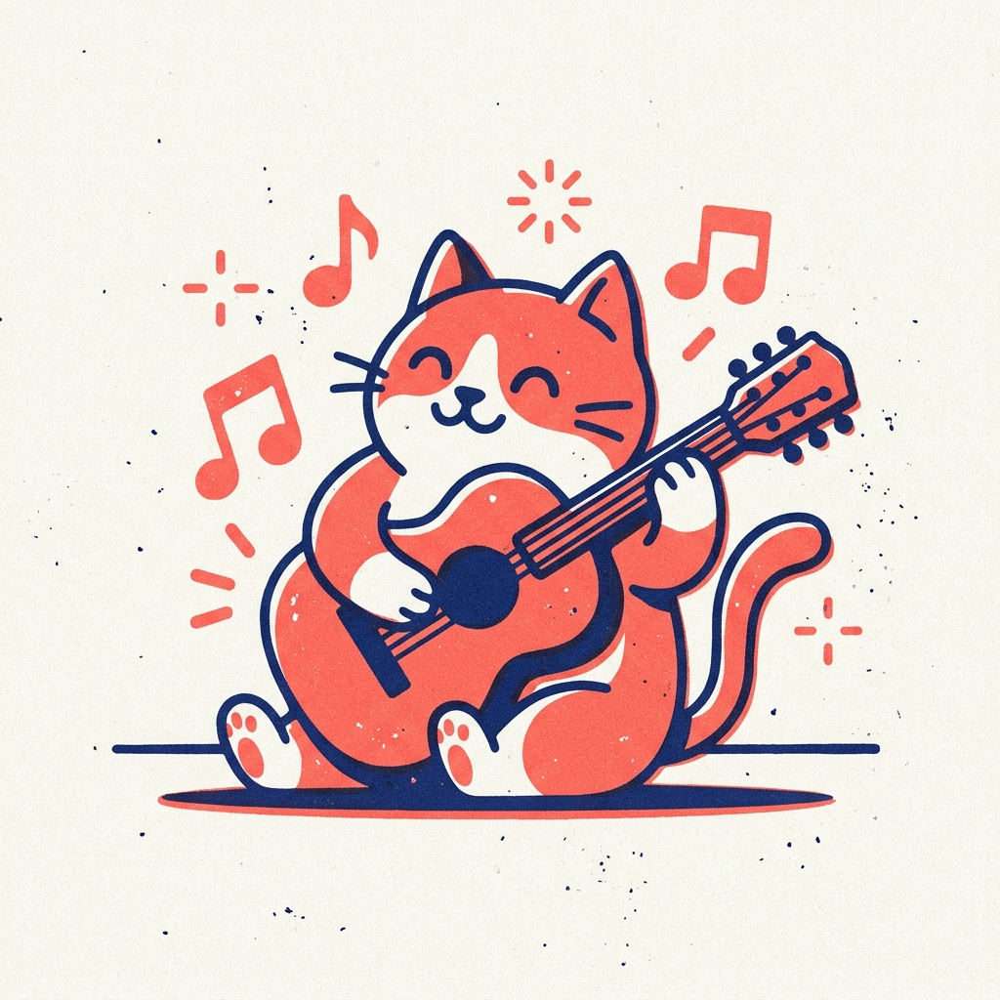
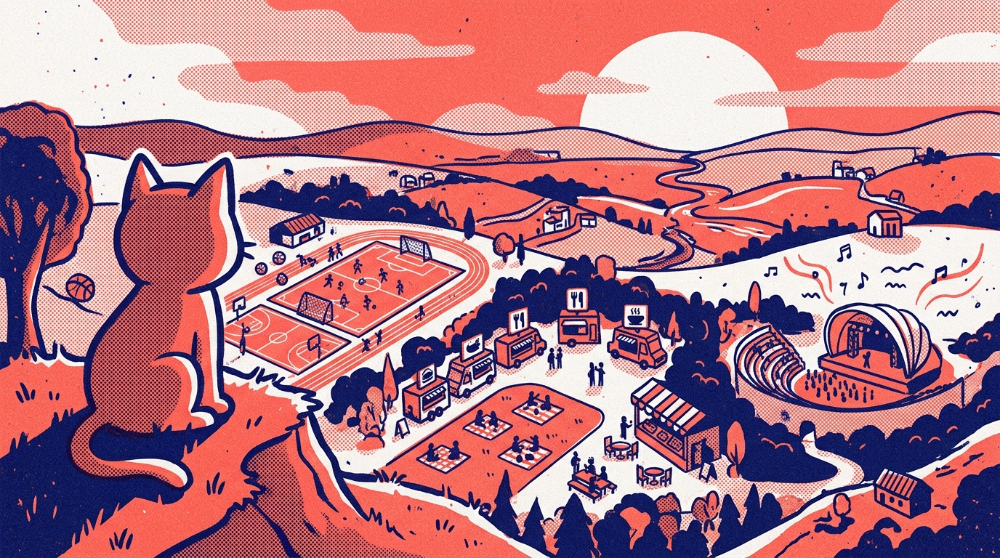
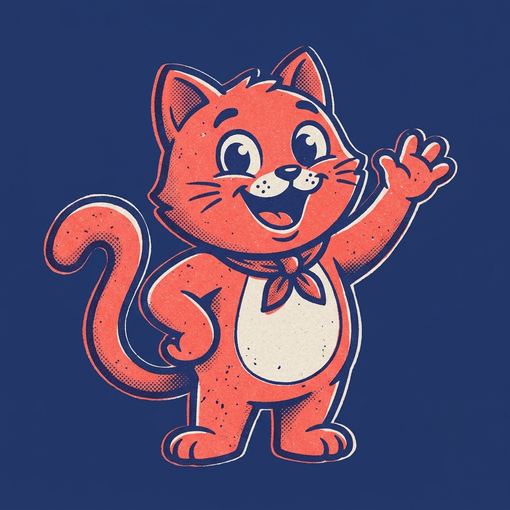
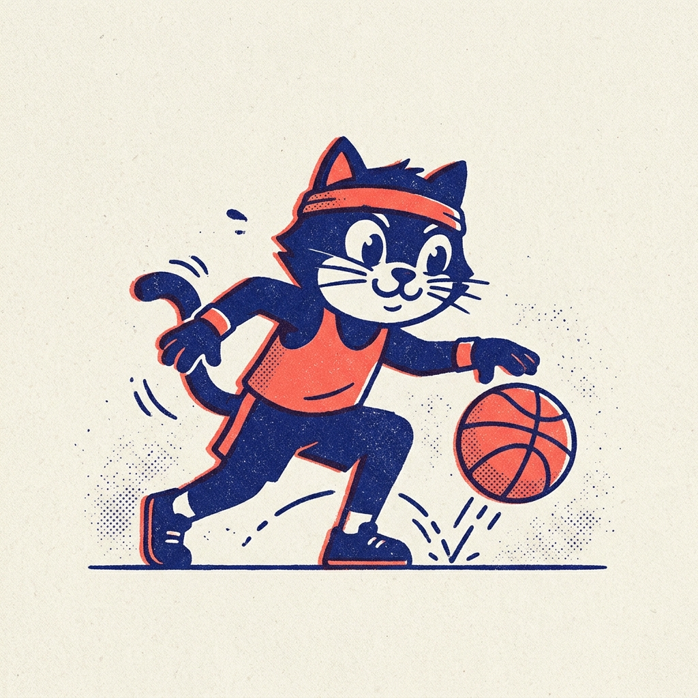
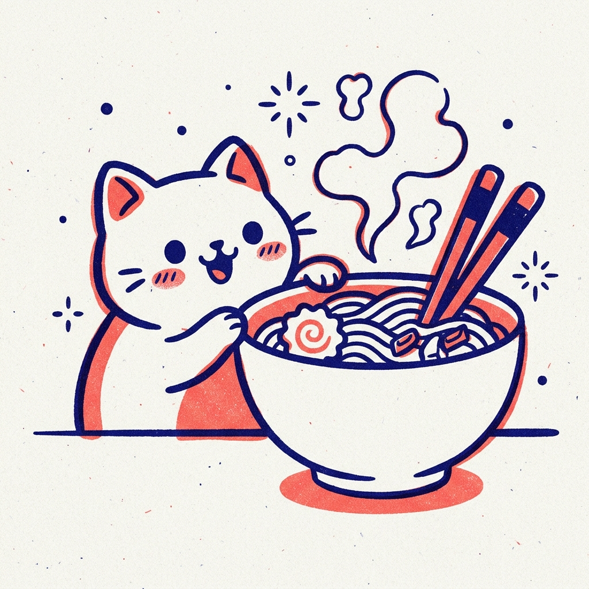

01
Müzik
Günün her anına eşlik eden melodiler, yeni keşfedilen parçalar ve ritmin verdiği dinginlik benim için vazgeçilmez.
KİŞİSEL SİTE
Üniversite yolculuğumda müziğin ritmini, sporun enerjisini ve iyi yemeğin keyfini bir araya getiriyorum.


HAKKIMDA
Üniversite eğitimime devam eden ve yeni şeyler keşfetmekten keyif alan bir öğrenciyim. Derslerimin dışında kalan zamanlarımda müzik dinlemek, sporla hareket etmek ve farklı yemekler tatmak bana büyük bir enerji veriyor. Bu sayfada kendimden kısaca bahsediyor ve günlük hayatıma renk katan bu üç temel ilgi alanımı paylaşıyorum.
NELERDEN HOŞLANIRIM

Günün her anına eşlik eden melodiler, yeni keşfedilen parçalar ve ritmin verdiği dinginlik benim için vazgeçilmez.

Hareket halinde kalmak, enerjimi tazelemek ve dinamik bir tempo yakalamak günlük rutinimin en keyifli parçası.

Yeni tatlar denemek, özenle hazırlanmış sofraların keyfini çıkarmak ve farklı mutfakları keşfetmek beni çok mutlu ediyor.
İLETİŞİM
Merhaba demek ya da ortak ilgi alanlarımız hakkında konuşmak istersen bana e-posta gönderebilirsin.